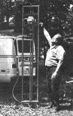

Issue # 72 - November/December 1981
Forget about expensive solar collectors. All the solar energy you need to heat and cool your home is already collected and stored.
Ronald Simmons
Thinking about solar energy? Good for you l I've been in the heating and cooling business for many years, and I'm completely convinced that solar energy is the most practical solution to the energy crisis.
However, you may be shocked when you find out how much solar collectors cost. Relax! I've got some good news for you: the biggest and best solar collector in the world is already in place at your doorstep. It's just waiting for you to use it.
The biggest and best solar collector, of course, is good old mother earth. Every day she soaks up tremendous amounts of energy - enough energy to heat and cool every home, school, office and factory in the world. Where is all this energy stored? Well, much of it is stored in ground water - in water just 50 to 100 feet deep in the ground.
And you can tap this energy for your own use, to heat and cool your home. All it takes is a ground water heat pump and a couple of water wells. That may sound like a complicated and expensive system, but it's really a very economical system that can pay for itself in fuel savings in just a short time. Let me tell you how it works.
Here in Virginia, for example, the water 50 feet deep in the ground stays at a constant temperature of 60° all the time, summer and winter. With a ground water heat pump, instead of cooling the outside coil of your air conditioner with hot outside air, you cool it with 60° ground water. Your compressor has to work only half as hard, and you cut your electric bill in half.
In the winter, it's just the reverse. Instead of burning expensive fuel, you use 60° ground water to boil Freon in a heat pump. Again, it's a very simple system, and the saving in your fuel bill is enormous.
And talk about conserving natural resources - the ground water heat pump system doesn't waste a drop of water. All the water you pump from one well goes right back into the ground by way of a second well. And you don't pollute the water, either. All you do is take some heat out of the water in winter, and put some heat back in the water in summer. It's like a great fly wheel with the sun replacing the energy you use.
Some of the best-known companies in the industry are now manufacturing ground water heat pumps, and the cost of the equipment has become very reasonable. The only big expense - the only reason everybody hasn't already switched to a ground water heat pump system - is the high cost of drilling two wells for each system. The prices commercial drillers charge have gone out of sight. That's the reason I got a HydraDrill.
Now I've got to say one thing: I never thought I wanted to be a well driller, but I'd never seen anything like this HydraDrill. Let me tell you. It was delivered to our shop one afternoon, and I took it out to a job site to fool around with it a little bit and see how it works. Wow! Before I knew it, I had drilled down 50 feet! I had no idea it would be so easy!
The next morning I took one of the boys with me and we finished that well and put a pump on it and got a solid stream of water. Then we moved to the other side of the house and drilled the second well. In less than a day and a half we had completed both wells. A commercial driller would charge 3 or 4 times what it would cost us to do the job ourselves.
And another thing, the Hydra-Drill goes places a commercial driller couldn't take his big drilling rig. We can drill in backyards. We can drill up next to the house. We can even drill behind the rose bush if we want to. There's just no place we can't drill with a Hydra-Drill.
We've got our drilling costs under control now, and our ground water heat pump sales are spreading like wildfire. A lot of times, we'll be drilling and a neighbor will come over and ask us to drill a well for him. I have to say "Sorry, we're just too busy. Why don't you get a Hydra-Drill and put in the well yourself?"
People ask me about the Hydra-Drill They want to know if it's practical and if I'm pleased with it. My answer is "Definitely! Absolutely! I'm just amazed with it!"
NOTE: Mother's readers can get a big, fully illustrated information kit on the HydraDrill including a booklet, "How to Drill Your Own Well. " The information kit is available free, without obligation. Requests should be addressed to DeepRock Mfg. Co., 155 Anderson Roar, Opelika, AL 36802.
|
 |
|
|